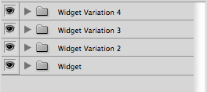
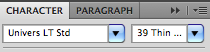

SanchoBBDO
Guías para Diseño Web y Digital
versión 1.0.0
Introducción
Este documento define las expectativas esperadas en la entrega de archivos y assets gráficos destinados para la producción digital.
El equipo digital de Sancho BBDO recomienda el uso de Adobe Fireworks™ (*.png) para la realización de diseños destinados a la web y otros dispositivos digitales, utilizando Adobe Photoshop™ e Adobe Illustrator™ como complementos.
Se aceptaran también assets y archivos en en *.psd o *.ai siempre y cuando respete los lineamientos especificados en esta guía.
Configuraciones generales
A continuación algunas configuraciones y recomendaciones iniciales para iniciar un proyecto web/digital en Adobe Illustrator y Adobe Photoshop.
Adobe Illustrator
Configuración de color
En el menú (Edit > Color Settings) modifique su configuración de color a “North America Web/Internet”.
Nuevo documento
Cuando se inicia un nuevo documento, ajustar "Document Profile" en “Web”. Además de esto, todas las unidades deben estar en pixeles. En el menú avanzado el modo de color debe estar en RGB, "Raster Effects" en 72 dpi, "Preview Mode" en “pixel,” y “Align New Objects to Pixel Grid” debe estar marcado. Las dimensiones del documento cambiarlas de acuerdo a las necesidades del proyecto.
Preferencias
En el menú (Preferences > General), seleccione la opción “Use Preview Bounds”.
Menú Vista
En el menú (View), active la opción "Pixel Preview", “Show Transparency Grid”, y “Snap to Pixel”.
Adobe Photoshop
Configuración de color
En el menú (Edit > Color Settings) modifique su configuración de color a “North America Web/Internet”.
Nombre las capas correctamente
Ser descriptivo como sea posible en cada capa. Nombrarlas inmediatamente reduce la confusión.
Buena idea
Mala idea
Utilice fólderes
Agrupar capas permite mostrar y ocultar areas rápidamente, mejorando la navegación.
Buena idea
Mala idea
Elimine las capas innecesarias
Eliminar las capas que no se usan, reducen el peso del archivo a la vez que evita confusiones.
Buena idea
Mala idea
Generalize elementos comúnes
No hay una buena razón para tener 5 copias de una capa, Utilizela en una capa maestra.
Buena idea
Mala idea
Utilice Layer Comps/Smart Objects
Layer Comps (Window > Layer Comps) son una increible forma de mostrar variaciones sin tener que mantener varios PSDs
Buena idea
Mala idea

Organización de los archivos
Consolide sus archivos
Mantenga sus diseños en el minimo número de archivos
Buena idea
Mala idea
Nombre sus archivos apropiadamente
Utilizar nombres como "Nuevo" o "Último" no es recomendado, es mejor utilizar nombres generales.
Buena idea
Mala idea
Mantenga los Assets relativos al archivo
Tener un folder dedicado para los assets junto al archivo es recomendado.
Buena idea
Mala idea
Realice una plantilla para los elementos de interfaz
Cree una página nueva o un archivo nuevo, donde se presente exclusivamente elementos de interfaz de usuario, como botones con sus estados, elementos de formularios, colores de estados de los links, etc…
Buena idea
Mala idea
Imágenes
Ajuste a…
ajustar a la grilla, ajustar al pixel, ajustar en general permite que los elementos se mantengan alineados correctamente
Buena idea
Mala idea
Utilice los modos de fusión con cuidado
Cuando se utilizan los modos de fusión se dificulta obtener el valor Hexadecimal del color. En general NO utilize modos de fusión (Blend Modes).
Buena idea
Mala idea
Utilice tipografías de icónos en lugar de imágenes
Utilizar tipografía de texto para iconos es mas recomendable que utilizar imagenes, ya que es más fácil de transformar y ajustar sin perder calidad que una imágen.
Buena idea
Mala idea
Tipografía
Utilice valores en pixeles exactos
Abstengase de redimensionar el texto con las herramientas de transformación. Siempre de a los textos valores en pixéles exactos, sin decimales.
Buena idea
Mala idea
Adjunte las fuentes licenciadas
Adjunte un folder, con las fuentes utilizadas, recuerde que estas deben estar licenciadas para su uso en sitios web.
Buena idea
Mala idea

No estire la tipografía
No es posible realizar esto por HTML/CSS
Buena idea
Mala idea
Controle sus cajas de texto
Esta muy bien utilizar cajas de texto, únicamente no las deje de un tamaño mayor al texto que contiene, ya que impide que se pueda seleccionar elementos que estan debajo.
Buena idea
Mala idea
Utilice diferentes cajas de texto
Cada encabezado y cada parrafo en diferentes cajas de texto permite encontrar rapidamente las características del texto.
Buena idea
Mala idea
Efectos
Utilice Color Overlay apropiadamente
Es más fácil encontrar el color de un elemento cuando no esta definido por sobreexposición de color (Color Overlay)
Buena idea
Mala idea
Cree patrones adecuadamente
No es aconsejable utilizar efectos con gradientes en elementos repetitivos, ya que dificulta su generación en HTML/CSS.
Buena idea
Mala idea
Mantenga el uso de efectos al mínimo
Con el incremento de uso de efectos, se complica la traducción de los mismos a CSS. Preferiblemente no utilice efectos o mantengalos al mínimo.
Buena idea
Mala idea
Maneje los bordes
Evite el uso de bordes en el centro y hacia afuera, utilice bordes hacia dentro.
Buena idea
Mala idea
Buenas prácticas
Utilice una grilla
La grilla establece un sistema de anchos, altos y alineaciones.
Buena idea
Mala idea
Utilice las sombras adecuadamente
las configuraciones por defecto de las sombras necesitan ser ajustadas para que logren un efécto mas realista.
Buena idea
Mala idea
Utilice Tipografías Web
Actualmente existen una variedad de servicios que proveen tipografías gratuitas y pagas para su uso en internet, se aconseja utilizarlas.
Gratuitas:
Pagas:
Buena idea
Mala idea

Checklist
Lea los copy en busca de errores ortográficos
Busque errores gramaticales
Buena idea
Mala idea

Compare contra los Wireframes
Revise exhaustivamente que los elementos y componentes incluidos en los wireframes se encuentren en su diseño.
Buena idea
Mala idea
Revise las imágenes
Busque imagenes que hayan podido salir con marcas de agua, especialmente si utilizó imágenes de stock.
Buena idea
Mala idea
Sea consistente
Utilice exactamente el mismo color en elementos que comparten estilos.
Buena idea
Mala idea
Recursos
- 50 reasons NOT to use Photoshop for Web Design
- Using Illustrator for Web Design
- Photoshop Etiquette
- Organize Your Design Files – Or ELSE!
- Handing Off PSDs That Won’t Make Your Co-Workers Hate You
- Organizing a Photoshop Document - Video
- Photoshop Tip – How to turn off “Add Copy to Copied Layers and Groups”
- How to Effectively Organize your Photoshop Layers
- How to delete all Hidden Layers at the same time in Adobe Photoshop
- States and Layer Comps
- Genius Ways To Use Photoshop Smart Objects
- Smart Objects
- Smart Objects for PSD Slicing
- Unveiling Photoshop Masks
- Shaping Textfields in Photoshop
- The Whys And The Hows Of Textures In Web Design
- Creating Tileable Textures
- Photoshop Patterns: Ultimate Guide
- A better Photoshop grid for responsive web design
- Establishing Your Grid In Photoshop
- Dealing with grids in Photoshop is a pain
- Modular Grid Pattern
- 0to255
Colaboradores
Licencia
(The MIT License)
Copyright (c) 2013 Sancho BBDO
Se autoriza por la presente, de forma gratuita, a cualquier persona que haya obtenido una copia de este software y archivos asociados de documentación (el "Software"), para tratar en el Software sin restricción, incluyendo sin ninguna limitación en lo que concierne los derechos para usar, copiar, modificar, fusionar, publicar, distribuir, sublicenciar, y / o vender copias de este Software, y para permitir a las personas a las que se les proporcione el Software para hacer lo mismo, sujeto a las siguientes condiciones:
El aviso de copyright anterior y este aviso de permiso tendrá que ser incluido en todas las copias o partes sustanciales de este Software.
EL SOFTWARE SE ENTREGA "TAL CUAL", SIN GARANTÍA DE NINGÚN TIPO, EXPRESA O IMPLÍCITA, INCLUYENDO PERO SIN LIMITARSE A GARANTÍAS DE MERCANTIBILIDAD, CAPACIDAD DE HACER Y DE NO INFRACCIÓN DE COPYRIGHT. EN NINGÚN CASO LOS AUTORES O TITULARES DEL COPYRIGHT SERÁN RESPONSABLES DE NINGUNA RECLAMACIÓN, DAÑOS U OTRAS RESPONSABILIDADES, YA SEA EN UN LITIGIO, AGRAVIO O DE OTRO MODO, DERIVADAS DE, OCASIONADAS POR CULPA DE O EN CONEXION CON EL SOFTWARE O SU USO U OTRO TIPO DE ACCIONES EN EL SOFTWARE.